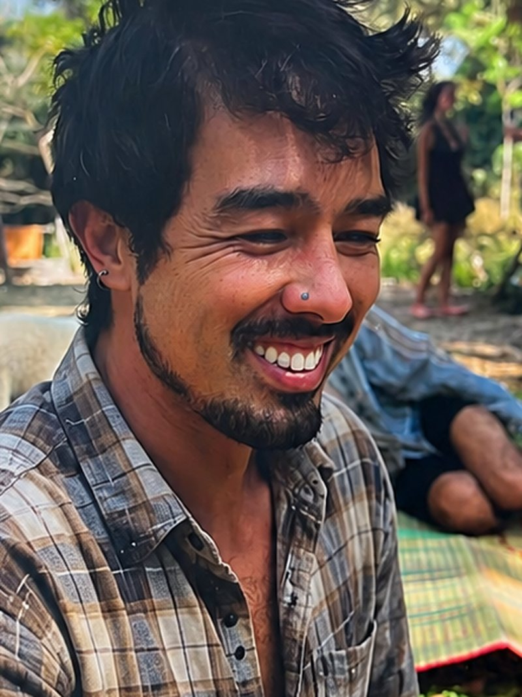
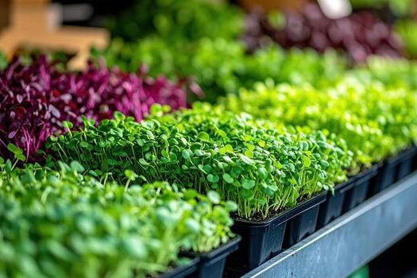
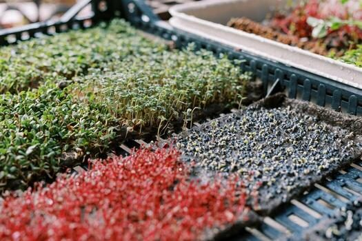
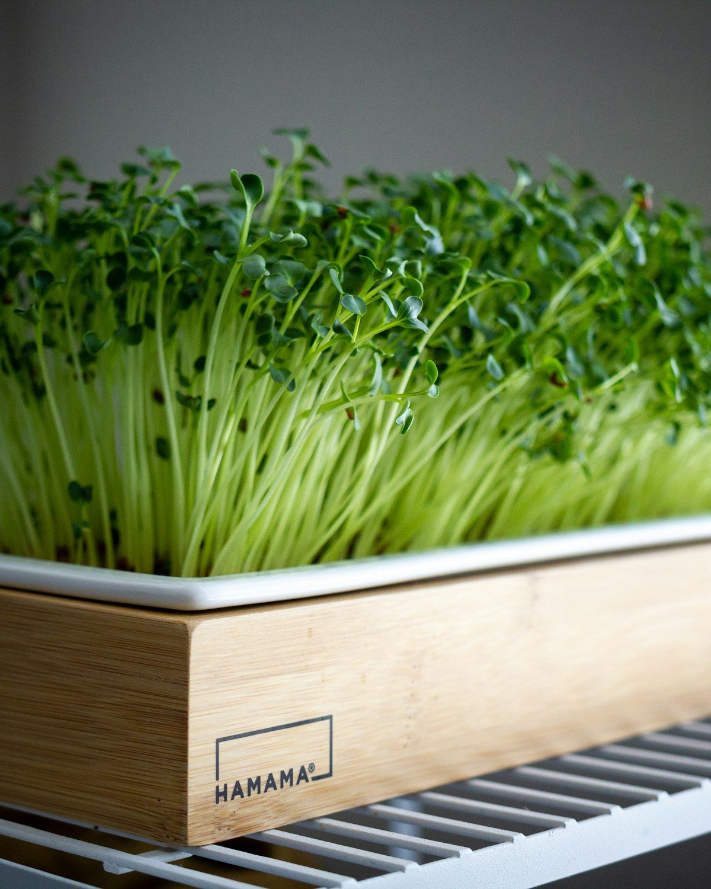
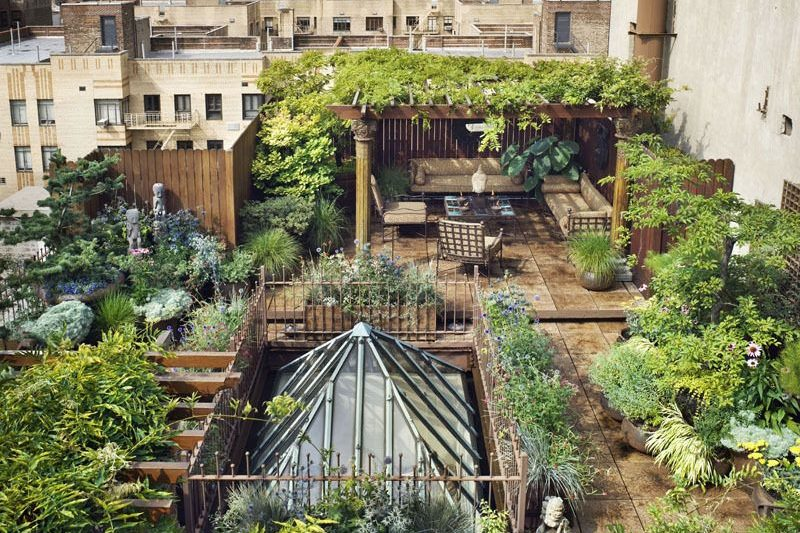
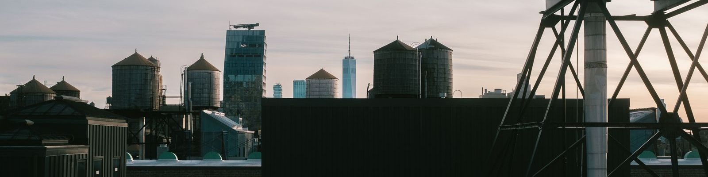
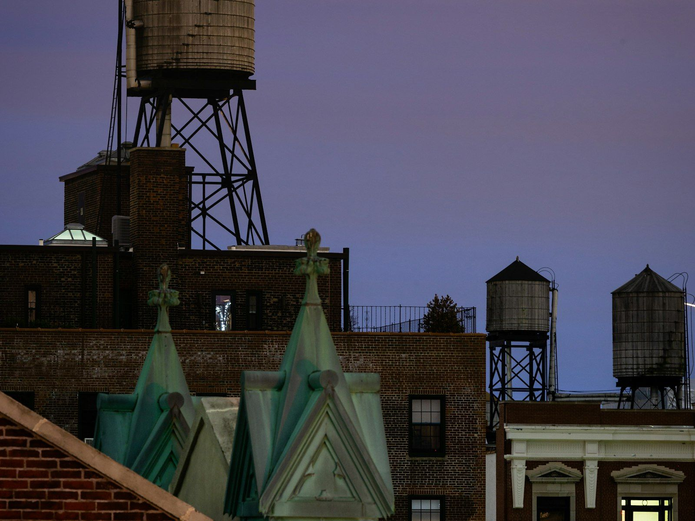
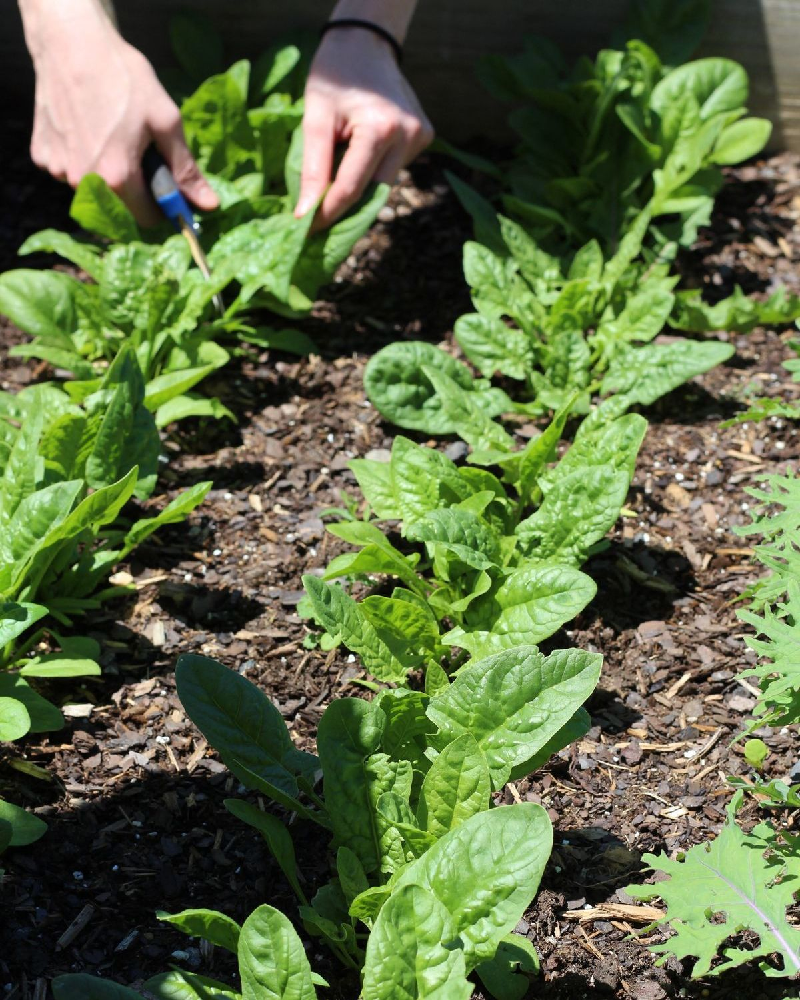

A rooftop proposal — Upper West Side
Manhattan has thousands of empty rooftops. I’d like to farm one.
One roof, one corner, one summer — about 400 square feet of trays on racks, nothing drilled or bolted to anything, and it comes down in a day. I’m Danny. I live on W 85th Street, and I want to grow clean organic greens up there and sell them to the people for less than the store charges.
Phase one is underway. I’m not asking for an investment, a construction project, or a change to your building — I’m asking for roof space and a conversation.

Danny Dalton. W 85th Street.
Upper West Side rooftops, seen from above. Flat, sunny, and doing nothing. Not my building — I don’t have a roof yet.
Pick whichever is easiest to say yes to.
I don’t expect free access to your roof. Space in Manhattan is worth something, and I’d rather start this by saying that out loud. These aren’t a menu to choose from — tell me which direction makes sense for your building and we’ll work out the specifics.
Whatever we agree on is in writing, it’s one season to start, and either of us can end it with 30 days’ notice. I’d rather have a short agreement you’re comfortable with than a long one you regret.
What I’m actually asking for
Bounded on purpose. Every line below is a limit on me, not on you.
This is the whole object.
Most people hear “rooftop garden” and picture raised beds, soil, hoses and a construction project. It’s a tray. It’s ten inches by twenty, about an inch deep, and it sits flat on a folding table. Everything else on this page is measured in that one unit.

Trays side by side at cutting size. Several varieties in one run — that is what a week of production looks like.

Adjacent trays at different stages. The one on the right was seeded days after the others — that stagger is what makes a steady weekly harvest.
Why microgreens, and why now
Microgreens are the first true leaves of vegetables and herbs — sunflower, pea, radish, broccoli, cilantro — harvested seven to ten days after seeding. They’re cut young, which is where the flavour and the nutrient density come from, and it’s also why they don’t need deep soil, a long season, or much space.
There are two numbers on this page and you can check both of them yourself.
A full cycle. Not a season, not a quarter — a week and a half. A tray seeded on a Monday is on somebody’s plate the following week, and the same square foot of roof does it again immediately. Most crops give you one or two harvests a summer.
What a container of microgreens costs at a grocery store on the Upper West Side right now. Walk into any market on Broadway and look. That price exists because the greens were grown far away, packed, trucked in, and handled by several businesses before they reached the shelf — and because a lot of them don’t survive the trip.
The whole idea is that almost all of that is distance. Growing on a roof on 85th Street and selling to people who live on 85th Street takes the trucks, the warehouse and the shelf life out of the equation. That’s what makes it possible to sell better greens for less money and still run a real business.
What I’m not going to show you
A revenue projection. I haven’t run a full season on a New York rooftop, and any five-year number I put here would be a number I made up — and if you took a share of the profits, you’d rightly hold me to it. The point of this season is to find out what a roof in this city actually produces: real yields, real heat, real wind, real customers, before anybody makes claims about it.
What I can tell you is that the math is quite good, that the cost to try it is low, and that I’m the one carrying that cost.
The questions a building manager should ask
You don’t know me. You’re being asked to let a stranger onto a roof you’re responsible for. These are the real questions, including the ones where the honest answer is that I don’t know yet. I’d rather answer them here than have them end the first phone call. Nothing here is folded away behind a click — you should be able to print this page or forward it to your board with every answer visible.
I am. I’ll sign an agreement that says so, including indemnifying the building for anything arising from my work on the roof. I’d expect your management company or attorney to have standard language for exactly this, and I’m not going to argue with it.
If your building requires anyone on the roof to be escorted, or to work only during certain hours, that’s fine. I’d rather you tell me your rules than have me propose my own.
This is the right question and the one I take most seriously — a membrane repair costs far more than anything I could pay you in rent. Nothing gets bolted, screwed, drilled, anchored, adhered, or ballasted. No penetrations of any kind. Everything is freestanding and movable, and trays sit on pads or a raised surface rather than directly on the membrane, so nothing sits wet against it and nothing scrapes it.
Before I bring anything up, I want to walk the roof with you or your super and photograph its condition, so there’s a shared record of what it looked like on day one. If your roofer has requirements or your warranty has terms, send them and I’ll design around them — or I’ll walk away from your roof rather than void a warranty.
Microgreens are the lightest thing you can farm — shallow trays an inch or two deep, cut at 7 to 10 days, before they ever build the root mass or soil volume a vegetable planter needs. No raised beds, no barrels of standing water, nothing permanent. A watered tray is in the neighborhood of a gallon of milk, and trays lie flat and spread out rather than stacking into towers.
Before anything goes up I’ll weigh a loaded tray on a scale and give you the total and the per-square-foot figure in writing. What I won’t do is tell you it’s fine for your specific roof — I don’t know your building’s structure and I’m not an engineer. If you or your board want a structural opinion first, that’s the right instinct, and I’d rather you have it than skip it.
Not yet, and I’m not going to tell you otherwise. I don’t have a policy because I don’t have a roof — nobody writes a policy for a site that doesn’t exist.
Here’s the order, and it doesn’t move: you tell me you’re interested, I bind a general liability policy naming the building, the owner, and the managing agent as additional insureds, I send your management company the certificate, and only then does anything go up. Tell me the limits you require of any vendor and I’ll meet them. You should ask me for the certificate rather than take my word for it. No certificate, no roof — I wouldn’t want it any other way.
I stay clear of the bulkhead and the roof hatch, the standpipe, the ladder, any required path across the roof, and the parapet edge. Show me the clearances your building has to keep — or have your super walk them with me — and I’ll draw the footprint inside them and send you the drawing before I bring anything up.
If keeping those clearances means the usable corner is smaller than I hoped, the corner gets smaller. I’m not going to be the reason you get written up.
Trays are bottom-watered — the water goes in the tray and stays in the tray. No hoses, no standing water, no runoff onto the deck or into the drains. Microgreens need far less water than a conventional garden because they’re harvested before they ever get big.
If there’s a spigot on the roof or the top landing, I’ll use it and pay a flat monthly amount for it or cover a submeter — your call. If there isn’t, I carry it up in jugs. That’s not a hardship, it’s just a few trips.
Nobody has to. If you don’t give out keys or fobs to vendors, I don’t need one — I’ll come at hours you approve, buzzed in or escorted for as long as you want that. If you do issue access to vendors, I’ll go through whatever your standard process is, sign in, and stay on the roof and the stairs and nowhere else.
Realistically it’s about twenty minutes in the morning and twenty at night, plus harvest days. If you’d rather I only come when someone from the building is on site, I’ll work around that.
There’s no open soil and no compost pile. Growing medium comes up sealed in a bin and leaves sealed in the same bin. Spent trays and root mats go down with me in a bag and out of the building; nothing accumulates on the roof.
The greens are cut at seven to ten days, long before anything flowers or seeds, so there’s nothing up there a pigeon or a rat is interested in. There’s essentially no noise either — no power tools, no machinery, no generator, nothing that runs unattended. Harvesting is a person with scissors and a container. I clean the space every time I’m there, and if it ever looks worse than I found it, that’s on me: one text and I’ll be there that day.
Straight answer: this is a summer project first. The warm months are a chance to prove the model outdoors before spending money on indoor space and grow lights, which is what winter production actually requires. I’m not asking your building to fund that, and I’m not going to promise you a year-round operation I haven’t earned yet.
If the season works, I’d want to talk with you about what comes next — indoors, another season, or both. If it doesn’t, everything comes down and the roof goes back exactly the way I found it.
Then it ends. Put a 30-day termination clause in whatever we sign, no cause required, and I’ll sign it without arguing. Everything I bring up is freestanding and comes down in a day, by hand. There’s nothing to demolish, nothing to unbolt, and nothing to remove but me.
That’s the entire reason phase one uses trays and folding tables instead of infrastructure. You’re letting a stranger onto your roof — you should be able to reverse that decision easily.
What this actually looks like
No beds, no soil on your roof, no plumbing. Trays on a folding table, a jug of water, and a pair of scissors. It’s quiet, it’s clean, it’s about waist high, and in ten days it’s food.
Every photograph in this section is a licensed reference photograph taken by somebody else. None of them is my roof or my tray, and each caption says which is which. That’s a worse page today and a page you can trust — and every one of them gets replaced the moment phase one produces the real thing.

Microgreens on a wire shelving rack, indoors. On a roof it’s a folding table instead of a rack — nothing stacked, nothing higher than waist height, so wind has nothing to catch.
A mat of microgreens lifted out of its tray. The roots hold the mat together in one piece — which is why the spent tray goes down the stairs in a bag rather than becoming a pile on your roof.

A planted roof garden in Manhattan. This is far more than I am proposing — no pergola, no beds, no structures. Mine is trays on racks in one corner, and it comes down in a day.
Trays in morning sun. Light and water is the whole input list — no power, no plumbing, nothing running unattended.

A Manhattan rooftop at dusk, water towers and the Downtown skyline behind it. Flat, sunny, and empty. That is the whole observation this project is built on.
Brownstone row houses, Upper West Side, Manhattan. I live on a block that looks like this one. So do the people who’d be buying the greens.
Radish microgreens at cutting size. Radish, pea, sunflower and broccoli are the varieties I’d start with.
Manhattan has an enormous amount of flat, sunny, unused space above it.
Danny Dalton · W 85th Street

Wooden water towers at dusk, New York. Every roofline in this photograph is flat, and almost none of it is being used for anything.
Seven to ten days, in four frames
Reference sequence — four photographs, not one tray
These are four different photographs standing in for one tray, not one tray photographed four times. I’m not going to build a fake time-lapse out of somebody else’s pictures. The real version — the same tray on day 0, day 4, day 8 and the cut — is four photographs I can take on my own counter in a week, and it replaces this frame for frame.
Day 0–3 · Seeded, covered
This frame is mine
to shoot.
Seed goes down on the flat and the tray stays dark for three days. There is no honest stock photograph of this, so there isn’t one here.
Day 4–6 · Uncovered
Arugula cotyledons — the first pair of leaves, straightening up once the cover comes off.
Day 7–10 · Cutting size
Pea shoots filling a tray. Cut here, before anything flowers or goes to seed.
The cut

Two hands and a pair of scissors, straight into the container. Then the same square foot starts again.
The limits of my own evidence
What I don’t know yet
I haven’t run a season on a New York rooftop. I don’t know what August heat and August wind do to a tray six storeys up, and I’ll find that out on my own money, not yours.
I don’t have a certificate of insurance, because I don’t have a roof. I don’t know what your management company requires of a vendor — tell me and I’ll match it.
I don’t have sales figures, because I haven’t sold anything yet. I don’t have a measured weight for a loaded tray on your roof, and I’m not going to publish a number I haven’t put on a scale. I’m not an engineer and I won’t give you a structural opinion about your building.
Every number on this page is either checkable in a store on Broadway or biological. Everything else is an assumption, and I’ve tried to say so where it is one.
The plan, such as it is
Six steps, in order, with the paperwork before the trays on purpose. The first real commitment you make is a phone call. Everything after that has an exit.
That’s the whole thing. It’s a season. It’s reversible. And it starts with one person saying yes.
Who I am
I’m Danny Dalton. I live on West 85th Street, a few blocks from wherever your building is. There is no company behind this and no one else on it — it’s me, some trays, and an idea about the roofs in this neighbourhood.
I’ve been growing microgreens in my apartment, at small scale, long enough to know how the crop behaves: what germinates evenly, what molds if you crowd it, what a tray weighs when it’s wet. The limit I hit wasn’t knowledge. It was floor space and sunlight. That’s what a roof solves.
What I haven’t done is run this commercially. I haven’t sold at volume, I don’t have a customer list, and I’m not going to pretend otherwise on a website. I’m not raising money and I’m not going to tell you I’ve done this before. What I have is a clear idea, a season to prove it, and a real reason to do it right: I live here, I’d be selling to my own neighbours, and the first building that says yes is the reference for every building after it. I can’t afford to be anything other than easy to deal with.
If you’d rather meet me before you decide anything — that’s the right instinct, and it’s exactly what I’m asking for.